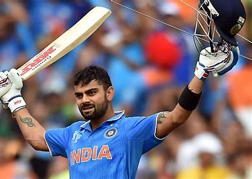

Virat Kholi
1988-present
The King
Virat Kohli (born 5 November 1988) is an Indian international cricketer and the former captain of the Indian national cricket team who plays for Royal Challengers Bangalore in the IPL and Delhi in domestic cricket. Considered to be one of the best cricketers in the world, he is widely regarded as one of the greatest batsmen in the history of the sport. Nicknamed "The King", due to his dominant style of play and popularity, Kohli holds numerous records in his career across all formats. In 2020, the International Cricket Council named him the male cricketer of the decade. Kohli has also contributed to India's successes, captaining the team from 2014 to 2022, and winning the 2011 World Cup and the 2013 Champions trophy. He is among the only four Indian cricketers who have played over 500 matches for India.
| Personal Information | |
|---|---|
|  | |
| Born | 5 November 1988 (age 34) Delhi, India |
| Nickname | Cheeku,King |
| Height | 5 ft 9 in (175 cm)[3] |
| Batting | Right-handed |
| Bowling | Right-arm medium |
| Role | Top-order batter |
| Relations | Anushka Sharma (wife) | International Information |
| National side | India (2008–present) |
| Test debut (cap 269) | 20 June 2011 v West Indies |
| Last Test | 20 July 2023 v West Indies |
| ODI debut (cap 175) | 18 August 2008 v Sri Lanka |
| Last ODI | 27 September 2023 v Australia |
| ODI shirt no. | 18 |
Early Life
Virat Kohli was born on 5 November 1988 in Delhi into a Punjabi Hindu family. His father, Prem Kohli, worked as a criminal lawyer and his mother, Saroj Kohli, served as a housewife. He has an older brother, Vikas, and an older sister, Bhawna. Kohli's formative years were spent in the Uttam Nagar and commenced his early education at Vishal Bharti Public School. According to his family, Kohli exhibited an early affinity for cricket as a mere three-year-old. He would pick up a cricket bat, display natural skill, and request his father to bowl to him.
In 1998, the West Delhi Cricket Academy (WCDA) was created and on 30 May of that year, Prem Kohli, espoused his younger son's fervour for cricket, assisted nine-year-old Kohli's aspirations and arranged for him to meet Rajkumar Sharma, who initially perceived him to be just another enthusiastic and determined young boy. However, two weeks later, Sharma was impressed by Kohli's accuracy and power in throwing.Upon the suggestion of their neighbours, Kohli's father considered enrolling his son in a professional cricket academy, as they believed that his cricketing abilities merited more than just playing in the gully cricket.Despite his abilities, he faced the setback of being unable to secure a place in the under-14 Delhi team, not due to a lack of merit but due to extraneous factors. Prem Kohli received offers to relocate his son to influential clubs, which would have ensured his selection, but he declined the proposals, as he was determined that Kohli should earn his recognition based on his own merit and overcome the system of nepotism and deceit prevalent in the Delhi and District Cricket Association (DDCA). Kohli persisted and eventually found his way into the under-15 Delhi team.He received training at the academy while simultaneously participating in matches at the Sumeet Dogra Academy located at Vasundhara Enclave.As per Sharma's recollection of Kohli's initial days at his academy, he exuded remarkable talent, making it arduous for the coach to curb his enthusiasm. Kohli remained prepared to bat at any position, and often, Sharma had to physically coerce him to leave the training sessions, as he was reluctant to depart.In pursuit of furthering his cricketing career, he transitioned to Saviour Convent School during his ninth-grade education. Kohli's ardent passion for cricket compelled him to travel long distances with his father to ensure that he never missed a match. With time, he diligently honed his skills and diversified his range of shots, commanding respect from the local bowlers.
Honours
National Honours
- 2013 – Arjuna Award, second highest sporting honour.
- 2017 – Padma Shri , India's fourth highest civilian award.
- 2018 – Major Dhyan Chand Khel Ratna Award, India's highest sporting honour.
Sporting honours
- Sir Garfield Sobers Trophy (ICC Men's Cricketer of the Decade): 2011–2020
- Sir Garfield Sobers Trophy (ICC Cricketer of the Year): 2017,2018
- ICC Men's ODI Cricketer of the Decade: 2011–2020
- ICC ODI Player of the Year: 2012,2017,2018
Other honours and awards
- People's Choice Awards India for Favourite Sportsperson: 2012
- GQ Sportsman of the year: 2013
- CNN-News18 Indian of the Year: 2017
- People for the Ethical Treatment of Animals(PETA) India’s Person of the Year: 2019